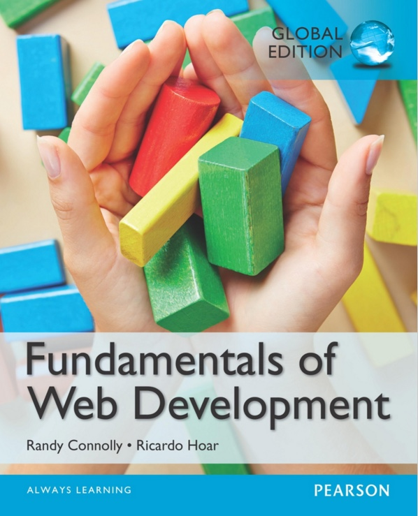

Oktober 2017
Studiengang Medieninformatik an der TH Köln
Campus Gummersbach
Prof. Christian Noss
Konzepte, Standards und Architekturstile verteilter, web-basierter Systeme // Webanwendungen im REST Architekturstil mit NodeJS entwickeln
Kommunikationssysteme, Protokolle, Schnittstellen, Dienste, OSI-Referenzmodell, TCP/IP-Protokollfamilie, Standardisierung, typische Bedrohungen in Netzen
1
2
3
4
Die Klausur hat eine Dauer von einer Stunde. Für die Vorbereitung werden 30 Stunden Workload kalkuliert. Wir bieten im Vorfeld der Klausur ein Klausurtraining an.
Anmeldung im PSSO erforderlich.
Von der Gesamtnote macht die Klausur 50% aus.
In der letzten Woche werden wir eine ganztägige Challenge als praktischen Prüfungsteil anbieten. Hiermit können Sie maximal 100 Punkte erzielen. Bei der Challenge werden wir Ihnen eine Aufgabe stellen, die Sie in einem 5-er Team lösen müssen. Dafür haben Sie den ganzen Tag Zeit. **Anmeldung im PSSO erforderlich.**
Wir werden einige Workshopthemen vorschlagen, die von Studierenden vorbereitet und durchgeführt werden. Hiermit können Sie maximal 100 Punkte erzielen. Diese Form des praktischen Teils richtet sich an Studierende, die bereits einschlägige Vorkenntnisse im Web-Development haben. Ein Workshop kann nur von 2-er Teams erarbeitet und durchgeführt werden. **Anmeldung im PSSO erforderlich.**
Für Anfänger und Fortgeschrittene
… geben Überblick über ein Themengebiet, zeigen theoretische Grundlagen und Beispiele, sind interaktiv und initiieren Diskurs, legen die Basis für die professionelles Agieren im Themenfeld und bauen das Vokabular als auch Wissen für die Prüfung auf. Die Teilnahme wird dringend empfohlen. Eine Anmeldung ist nicht erforderlich.
… bringen Theorie und Praxis zusammen, schulen und trainieren in einem bestimmten Themenfeld, erfordern den sicheren Umgang mit den trainierten Softwaretools, erfordern das Grundwissen aus den Vorträgen. Die Teilnahme wird dringend empfohlen. Zu Workshops muss sich im Medieninformatik Wiki angemeldet werden. Wenn möglich, sollte hier ein eigener Rechner mitgebracht werden.
… trainieren den Umgang mit Domänen-spezifischer Software und verbessern die Handlungsfähigkeit und -geschwindigkeit. Zu Trainings muss sich im Medieninformatik Wiki angemeldet werden. Wenn möglich, sollte hier ein eigener Rechner mitgebracht werden.
… geben den Studierenden die Chance, Rückmeldung zu Ihrem Lernfortschritt zu bekommen. Hier werden Aufgaben gestellt und Unterstützung bei Problemen angeboten.
Wo stehen Sie?

Fundamentals of Web Development
März 2014
von Randy Connolly & Ricardo Hoar
Bei uns in der Bib 10x vorhanden.